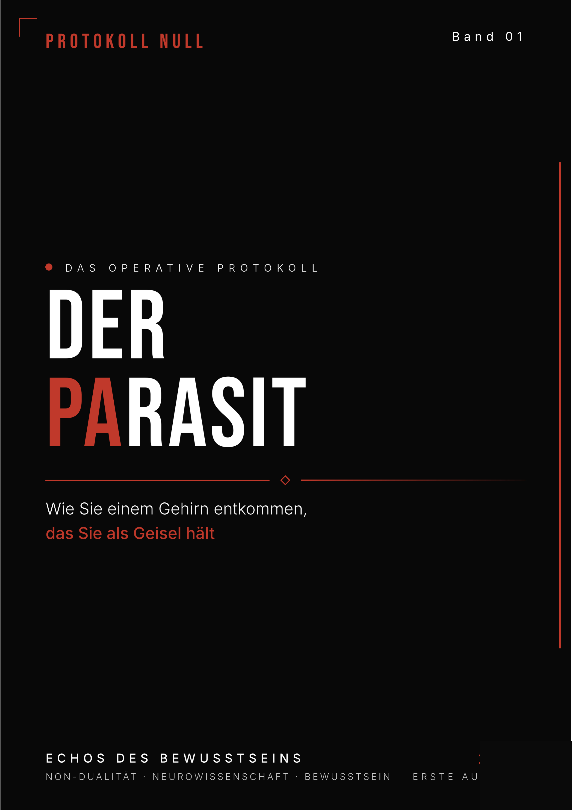
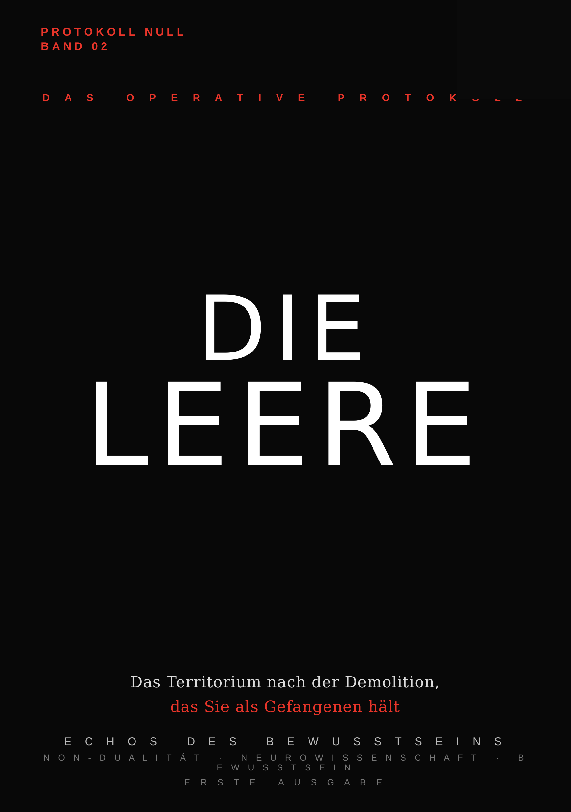
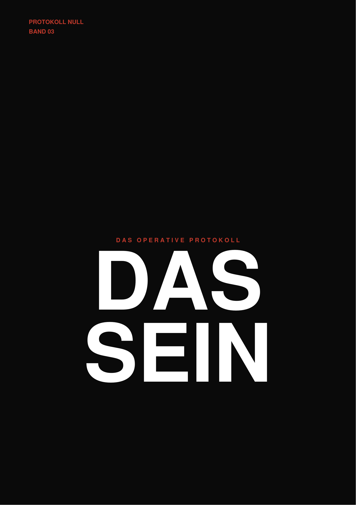

Você leu os livros. Você meditou. Você acreditou naquelas promessas de paz e harmonia. Mas quando o relógio inverte e você percebe, no silêncio da madrugada, que tem muito mais passado do que futuro... quando uma crise financeira esmaga a sua porta e ameaça tudo o que você demorou décadas para construir... ou quando o seu relacionamento desmorona, te jogando de volta à estaca zero... o seu teatro de "despertar espiritual" vira pó em frações de segundo. Du hast die Bücher gelesen. Du hast meditiert. Du hast an jenen Versprechungen von Frieden und Harmonie geglaubt. Aber wenn sich die Uhr umkehrt und du im Stillen der Nacht erkennst, dass du viel mehr Vergangenheit als Zukunft hast... wenn eine finanzielle Krise deine Tür erdrückt und alles bedroht, das du Jahrzehnte lang aufgebaut hast... oder wenn deine Beziehung zusammenbricht und dich auf Null zurückwirft... dein Theater des "spirituellen Erwachens" wird in Sekundenschnelle zu Staub.
Enquanto você busca conforto emocional, a Matrix continua operando na densidade brutal do mundo real. O que acontece com a sua mente quando a ilusão do controle é arrancada de você à força? A maioria entra em colapso. Pânico. Reboot do Ego. Während du nach emotionalem Komfort suchst, operiert die Matrix in der brutalen Dichte der realen Welt. Was passiert mit deinem Verstand, wenn die Illusion der Kontrolle dir gewaltsam entrissen wird? Die meisten brechen zusammen. Panik. Ego-Neustart.
Você não precisa de mais gurus falando em círculos. Você precisa saber COMO FUNCIONA de verdade. Du brauchst keine weiteren Gurus, die im Kreis sprechen. Du brauchst zu wissen, WIE ES WIRKLICH FUNKTIONIERT.
A sequência é um funil de descompressão mental: nós matamos a ilusão (Vol 1), estabilizamos a mente no vazio (Vol 2) e, só então, blindamos você para operar no mundo humano (Vol 3). Die Sequenz ist ein Trichter der mentalen Druckentlastung: Wir töten die Illusion (Band 1), stabilisieren den Verstand in der Leere (Band 2) und panzer dich dann, um in der menschlichen Welt zu operieren (Band 3).

Este não é um guia reconfortante. É uma demolição brutal daquilo que você acredita ser verdade sobre você mesmo. Nós forçamos você a encarar que suas escolhas são mecanismos de defesa programados por trauma e aprovação social. É a fase de sangria: cortamos o suporte vital das mentiras que você conta a si mesmo. Dies ist kein beruhigender Leitfaden. Es ist eine brutale Demolition dessen, was du für wahr über dich selbst hältst. Wir zwingen dich zu erkennen, dass deine Entscheidungen Abwehrmechanismen sind, die durch Trauma und sozialen Zwang geprägt sind. Es ist die Blutungsphase: Wir durchtrennen die lebenswichtige Unterstützung der Lügen, die du dir selbst erzählst.

Após a demolição, ensinamos a reconfiguração. Não é meditação zen, é vigilância tática absoluta. Você aprende a habitar o espaço milimétrico entre o pensamento e a reação, tornando-se imune às oscilações emocionais que destroem casamentos, amizades e sanidade. A verdadeira força é sustentar o silêncio enquanto a sua vida ao redor pega fogo. Nach der Demolition lehren wir die Neukonfiguration. Es ist keine Zen-Meditation, es ist absolute taktische Wachsamkeit. Du lernst, im Millimeterraum zwischen Gedanke und Reaktion zu verweilen und wirst immun gegen emotionale Schwankungen, die Ehen, Freundschaften und Vernunft zerstören. Die wahre Kraft ist, die Stille zu bewahren, während dein Leben um dich herum brennt.

Com o sistema limpo, o Band 03 torna-se o seu manual de sobrevivência no caos humano. Aqui, forjamos o "Ego Instrumental". Você não se torna uma pedra sem sentimentos, você vira um operador blindado. É o pragmatismo aplicado à brutalidade diária: como lidar com familiares tóxicos, sobreviver a golpes financeiros, negociar limites em relacionamentos e tomar decisões críticas sem ser engolido pelo desespero existencial. Mit einem sauberen System wird Band 03 dein Überlebenshandbuch im menschlichen Chaos. Hier schmieden wir das "Instrumentale Ego". Du wirst kein gefühlloser Stein, du wirst ein gepanzerter Operator. Es ist Pragmatismus angewandt auf die Brutalität des täglichen Lebens: Wie man mit giftigen Familienmitgliedern umgeht, finanzielle Anschläge überlebt, Grenzen in Beziehungen verhandelt und kritische Entscheidungen trifft, ohne von existenziellem Hass verschlungen zu werden.
Apenas Band 01
(A Demolição)
Nur Band 01
(Die Demolition)
Apenas Band 02
(O Silêncio Absoluto)
Nur Band 02
(Das Absolute Schweigen)
Band 01 + Band 02 + Band 03
Arquivo Clínico Completo
+ Acesso aos Protocolos de Emergência
(Blutungs-Protokoll)
Alle 3 Bände
Klinisches Archiv
+ Blutungs-Protokolle
€ 23,80 economizados€ 23,80 sparen
Nós não estamos aqui para ser seus terapeutas ou passar a mão na sua cabeça. O Protokoll Null contém métodos brutais de autópsia psicológica e sobrevivência nua e crua. Wir sind nicht hier, um deine Therapeuten zu sein oder dir über den Kopf zu gehen. Das Protokoll Null enthält brutale Methoden der psychologischen Autopsie und rohe Überlebenskunst.
Mas se você está pronto para operar a máquina, o acesso está liberado. Aber wenn du bereit bist, die Maschine zu bedienen, ist der Zugang freigegeben.
ASSUMIR O CONTROLE DA MÁQUINADIE MASCHINE KONTROLLIERENSeu ego sabe que isso significa seu fim. Por isso resiste. Mas se você chegou até aqui, uma parte de você já está pronta para operar a máquina. Dein Ego weiß, dass dies sein Ende bedeutet. Deshalb widersteht es. Aber wenn du bis hierher gekommen bist, ist ein Teil von dir bereits bereit, die Maschine zu bedienen.
PARA O PROTOCOLOZUM PROTOKOLL